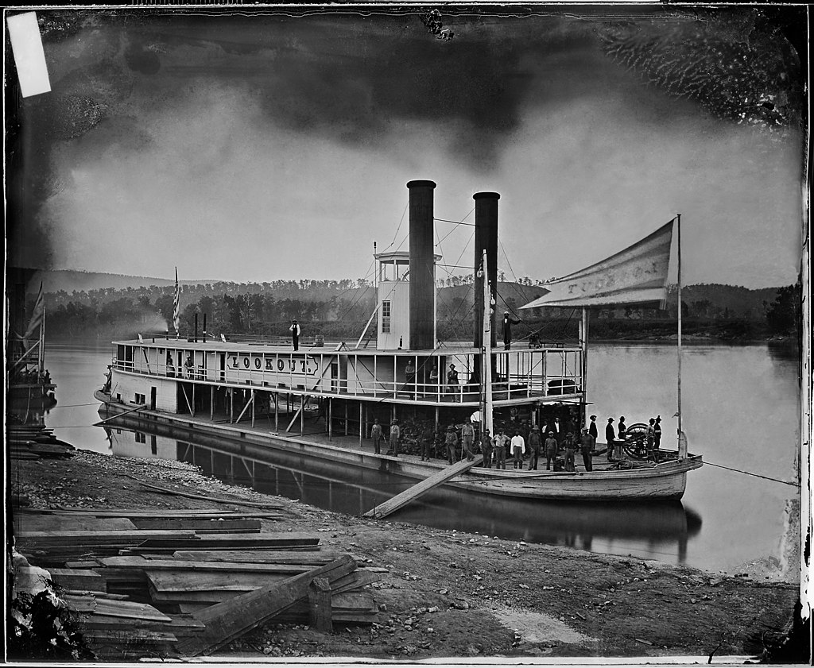

Tech: Now and Then

19 April 2021
A replication of an ancient merchant boat, which used to have many that would sail the seas in search of business.
Boats are an extremely important invention of humanity that lets us traverse waters far too great to traverse across. They can deliver many goods that can help a nation prosper, and they can carry people all over the world, albeit at a low speed. Although, what was the first idea for a boat? How have they changed over the years? And how far have these come?
The very first boats that can be traced back would be during the Homo Erectus period, or our ancestors from over 800,000 years ago. We don't actually have their boats of course, as they've all rotted away. The evidence of their existence would be from the crossing of the Island of Flores, which are island nations that are off the coast of Africa. These nations, even 800,000 years ago, were still largely separated by water (at least 100km gaps). The only way that these ancestors would have made it across would be via their own boats, which seem to have been formed by bamboo.
An image of the Pesse Canoe, the oldest known boat that survived to this day.
The next possible advancement possibly came from Homo Sapiens, which seemed to use more materials and higher quality craftsmanship. These boats were little more than log rafts tied together with plant fibers, but they were better. After that, the tools advanced and people started to realize that we could carve out a tree and ride in it instead of tying things together. This made things like the Pesse Canoe, which is the oldest known boat found, as it seemed to have been created in 8,000 BCE.
There was then the idea of putting a waterproof skin over a base like a basket. Europe used a wicker basket for the frame and leather on the undersides while Asia/Middle East used cloth and pitch. Kayaks were then made with a similar style, with people like the Aleuts and Inuits stretching seal skin over a frame covered in whale fat to insulate them and protect them from waves.
An illustration of an Egyptian boat, some of the earliest visual evidence of boats that have been found.
The next boats that were found were by the Egyptians, which depicted oars and sails, with oars being the most useful due to their main use in the Nile River. The boats were constructed around 6000-3000 BCE. These boats were primarily made out of reeds due to no trees existing. Later on, the Egyptians took them out to sea to get better trade deals with people who weren't in Egypt. They began to shift to more of a sail design due to them taking much less manpower while being able to go much faster.
An illustration of a Galley, another early boat created by the Phoenicians.
Soon after, in 1550 BCE, the Phoenicians of Canaan created their own style of boat called the Galley. This boat was primarily moved via oars, and it was too primarily used for commerce and warfare. Over time the warfare boats became slimmer due to the usage of rams being tied to the front, and less weight equaled more ramming power. While these boats morphed into using more sails by the later ages, they still used oar power and were far more maneuverable than the average ship.
An illustration of a Viking longboat, arguably the most famous old ship.
Around 1000 CE, the Vikings created longboats to easily cross the ocean. These boats had massive sails along with around 60 men to paddle it along. They were also decently thin, which allowed them to traverse oceans and rivers. These boats allowed them to ship many soldiers overseas along with maybe getting in a few naval battles.
An image of a Junk boat, a Chinese boat featuring a rudder and battened sails.
In 1100 AD, the Chinese began majorly developing a new type of boat called Junk. The name comes from it being a medium-large sized ship with a rudder. These ships were primarily used by traders due to their large emphasis on sails rather than manpower through oars. A centerboard is also used to stabilize the ship, which is still used in today's common sailboats.
When the 1450's rolled around, many more wooden ships assembled with planks began to become popular. These ships often had around 3-4 masts and were largely controlled by a group of people who would be a lookout, navigator, and crew in case anything went sour. These ships were often used for trading to foreign lands, explorers looking for their next adventure, cargo transporters trying to get from point A to point B, and battleships for naval conflicts.
An image of the HMY Mary, the first yacht to be used for exclusively transporting someone in power.
Charles the II of England chose to be transported via a yacht to transport himself from the Netherlands from England in 1660. Before this, most yachts were only used to transport the Dutch navy, not for any royal transport. After the event, yachts became known for transporting important people, and that still carries to this day. Similarly, in 1818, the Black Ball shipping line that transported goods in between the US and England began to offer passenger services for people in the US, making them the first official line from the US to England.
An image of the "Look out" on the Tennessee River in 1860, one of the earliest commercial steam boats.
The slow quality of steamboats in the early 19th century led many people to first use them on ships. The initial quality of these engines were so bad that the boat would likely only go 3-4 miles an hour at peak performance, making walking a significantly better idea than trying to use these boats. After a while though, advancements were made and these boats were made much more efficient. These boats began to see major use in the rivers of the United States, which also were accompanied by many legal troubles by many steam boat industries. Unfortunately, these boats were practically uprooted by the time trains came into development due to their much more economic use of fuel/power of transport.
The major advancement of the 1840's was the idea of using an all-steel boat instead of the traditional wood design. The boat was designed by the Great Western Steamship Company, and the boat was called the Great Britain. It was created in 1843, and it has survived and is on display on Bristol's Floating Dock. There was also Cunard's steamboat company that established a mail line across the Atlantic ocean, which evolved into a race to make the most safe and fast boat to deliver things across it. These shipments also eventually involved people with people in Europe rushing to get to the US to escape wars and issues.
An image of the Lusitania, the boat most often known for being sunk by Germany via torpedo and making Americans wanting to enter WWI.
The next major advancement was the creation of the steam turbine in 1884, which was a device that extracts thermal energy (heat) from pressurized steam, which then is used to do mechanical work on a rotating shaft. This made many boats faster and much more efficient, leading to many cruise-liners integrating these engines. A known ship that used this engine was the Lusitania, which was sunk by Germany in an act of war against the US. Another more-known ship that used this was the Titanic, which was a massive boat that was sunk by an iceberg, leading to about 1,500 deaths.
During the 1920's, tourist massively grew due to the post-WWI economy leading many businesses into building many more boats. Unfortunately, during 1929, there was a global depression that led to many people not traveling on these luxury cruisers. Businesses tried as they might with creating larger and larger boats, but no-one went on them. 10 years later, most sea travel was used as transportation for many soldiers. These boats started to use propellers rather than sails due to their little size but massive power, while sails needed a lot of windpower to move. Finally, ships began to use diesel engines due to the rise in petroleum costs and and cheaper use of diesel.
In the end, it's insane how far these boats went. Originally, they were just sticks tied together that would float across. Now, we got to the point where engines make tiny explosions to power thousand-ton Goliaths that carry thousands of people.